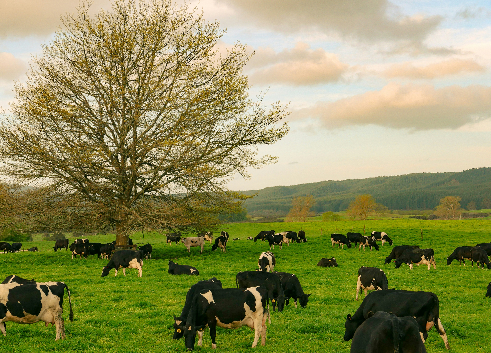

Onkareshwar Dairy Farm
Welcome to Onkareshwar Dairy Farm. Our farm is focused on providing fresh and quality dairy products to customers.
We take proper care of our cows and maintain a clean and healthy environment for them. Our goal is to maintain good quality milk through proper dairy farm management.
Care of Our Cows
Cows are an important part of our dairy farm. We provide them with proper food, clean drinking water and a comfortable environment.
Proper feeding and regular health monitoring help maintain the health of our cows. We make sure that the cows receive nutritious food according to their requirements.
Clean surroundings are maintained to protect the cows from diseases and infections. Regular cleaning of the cattle area is an important part of our farm management.
We also focus on animal hygiene and health so that healthy animals can produce good quality milk.
Milk Quality & Dairy Products
Milk quality is one of the main priorities of Onkareshwar Dairy Farm. Milk is collected and handled carefully to maintain its freshness and quality.
We monitor the quality and quantity of milk during the production process. Proper hygiene is maintained during milk collection and handling.
Our dairy farm can provide different dairy products according to customer requirements. Product quantity, price and quality are managed properly through the dairy management system.
Customer satisfaction is also important to us. Customers can view available products, place orders and provide feedback through the system.